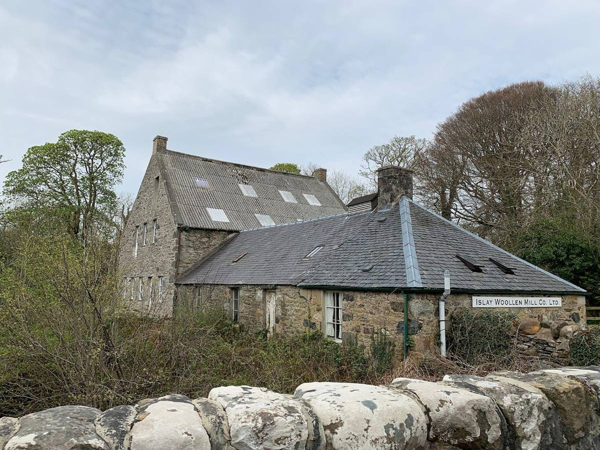
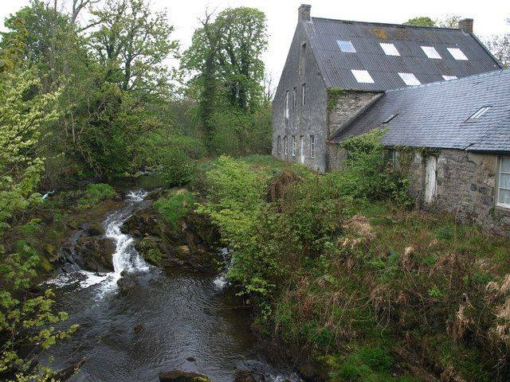
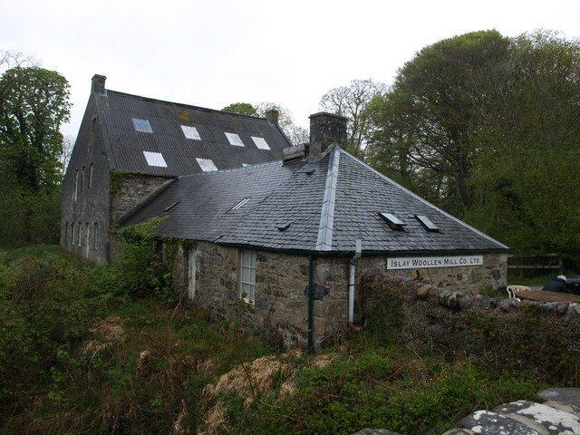

Two of Islay's other crafts. Islay Ales brews on the low road opposite the airport, between Port Ellen and Bowmore. The Islay Woollen Mill, in Bridgend at the head of Loch Indaal, has been making tweed since 1883.
The brewery runs tours daily at 11:00, 14:00 and 16:00. They end in the Tap Room with a beer and whisky tasting, and the bus between Port Ellen and Bowmore stops about 100 metres away.
The Woollen Mill's cloth has been in films including Braveheart, Forrest Gump, Rob Roy and War Horse. A flood in December 2023 damaged its old Dobcross looms, so the weaving now happens on the mainland, but the mill shop is full of jackets, caps, scarves, throws and tweed by the metre.
Islay Woollen Mill →What it looks like



Photographs from Wikimedia Commons: Andrew Abbott, CC BY-SA 2.0; Andrew Abbott, CC BY-SA 2.0; Andrew Abbott, CC BY-SA 2.0; Andrew Abbott, CC BY-SA 2.0. Prices are 2026 figures in pounds, with rand at £1 = R22.19. Check before booking.